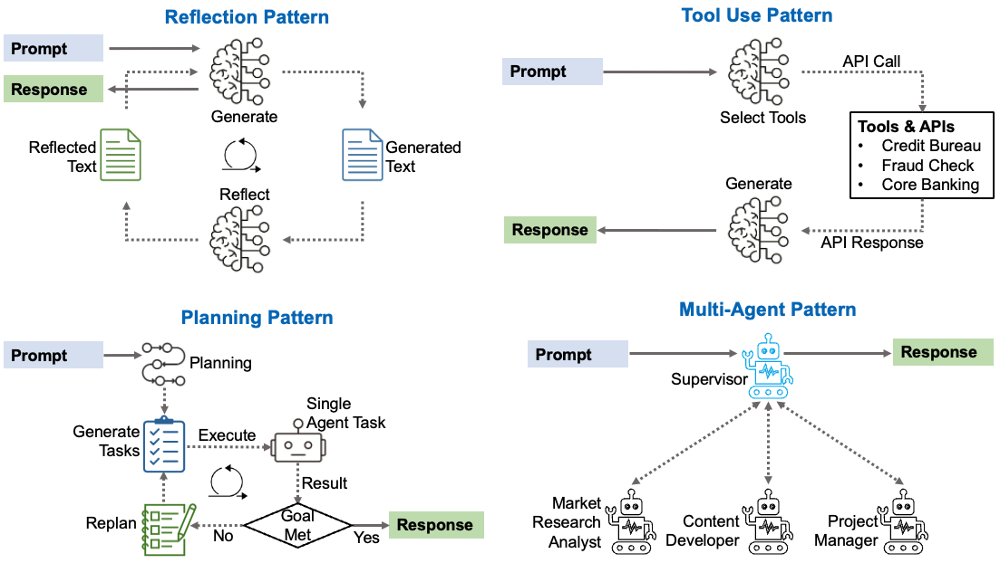
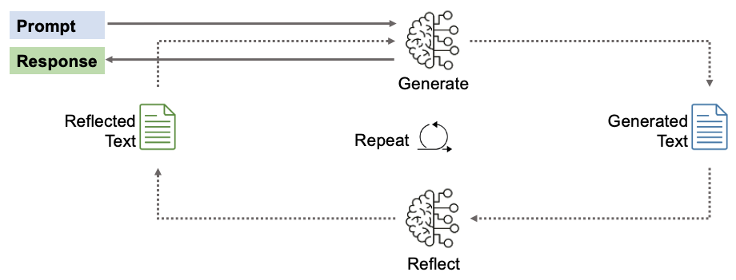
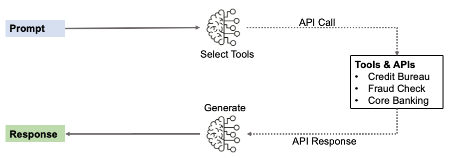
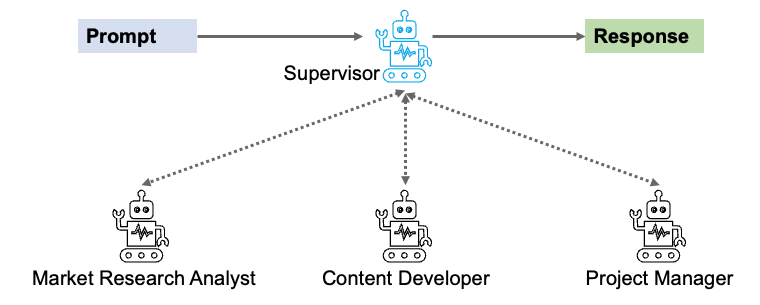

Agentic AI
1 Introduction
AI systems are gaining autonomy. The latest wave—Agentic AI—doesn’t just answer questions or generate content on command. These systems plan, decide, and act on their own to achieve goals you set. Think of the difference between asking someone for directions versus hiring them to get you there. The first requires you to do the work. The second handles the complexity for you.
This shift from reactive to proactive intelligence changes how organizations can deploy AI. Instead of building workflows around what the model can do in a single interaction, you can assign objectives and let the system figure out how to accomplish them. That capability is already reshaping operations in financial services, healthcare, customer support, and software development.
1.1 What Is Agentic AI?
Agentic AI systems act with intent and autonomy to achieve defined goals. The key distinction: they don’t just respond to commands—they pursue objectives.
Here’s why this matters: it changes what you can delegate to AI. Traditional systems require you to orchestrate each step. Generative systems require you to prompt for each output. Agentic systems let you specify the outcome and trust the system to figure out how to get there.
Consider how a loan application moves through a bank. A traditional system routes applications through fixed decision points. A generative AI chatbot might answer questions about loan requirements. An agentic system actually processes the application—pulling credit data, verifying employment, calculating risk-adjusted pricing, checking compliance rules, and routing exceptions to human reviewers when needed. The difference isn’t just scale. It’s whether the system can navigate complexity without constant human intervention.
| AI Type | What It Does | Key Limitation |
|---|---|---|
| Traditional AI | Executes predefined rules or predictions from trained models | Can’t adapt to tasks outside its training scope |
| Generative AI | Creates content (text, images, code) based on learned patterns | Reactive: requires explicit prompts for each step |
| Agentic AI | Pursues goals through multi-step planning and decision-making | Requires oversight to prevent unintended autonomous actions |
Agentic systems combine several capabilities that earlier AI generations handled separately or not at all: maintaining context across interactions (memory), breaking complex goals into subtasks (planning), accessing external tools and data sources (tool use), and improving based on outcomes (learning).
2 How Agentic AI Works
Agentic systems run in a continuous cycle—perceiving their environment, reasoning about options, planning actions, executing through tools, and learning from results. The cycle never stops. It adapts as conditions change.

Perceive — The agent gathers data from available sources: databases, APIs, document repositories, sensor feeds, or user inputs. Memory systems store relevant context from prior interactions and decisions.
Reason — A reasoning engine (typically a large language model) analyzes the current state, evaluates options, and determines the best approach given the goal and constraints. It weighs tradeoffs, anticipates consequences, and selects strategies.
Plan — The planner breaks complex objectives into discrete tasks, sequences them logically, and identifies dependencies. For a loan approval goal, the agent might plan to: verify identity, pull credit history, calculate debt-to-income ratio, check against underwriting guidelines, and route to human review if red flags emerge. Each step depends on the previous one, and the agent adjusts the sequence if something fails.
Act — Tool-use capabilities let the agent execute planned tasks by interacting with external systems. It might call an identity verification API, query a credit bureau database, run a calculation, update a CRM record, or send a notification. The agent chooses which tools to use based on what each step requires.
Learn — Feedback loops capture outcomes and adjust future behavior. If a particular sequence of checks consistently flags false positives, the system refines its approach. If certain customer segments respond better to specific communication timing, the agent adapts its strategy.
Each interaction informs the next. A customer service agent might start with a standard response template, detect frustration in the customer’s reply, shift to a different communication strategy, pull additional account context, and adjust its tone—all within a single conversation thread.
These capabilities—perception, reasoning, planning, action, learning—don’t work in isolation. They’re orchestrated through specific design patterns.
3 Agentic Design Patterns
Agentic systems rely on four core design patterns. Each solves a different problem, and real systems combine them.

3.1 Reflection:
An agent that can’t critique its own output is just automation with extra steps. Reflection mechanisms let systems evaluate whether their actions achieved the intended outcome, identify errors in reasoning, and adjust course.
Best for: Tasks where you need to check and improve quality before delivery. Works well for regulatory reports, customer communications, and compliance documents that have clear quality standards.

A customer service agent might review its drafted response for tone, clarity, and alignment with brand guidelines before sending. A credit analysis agent might validate whether its risk assessment considered all required factors and whether calculations are correct. Each iteration catches errors that would otherwise reach customers or regulators.
Why this matters: Without reflection, agents repeat mistakes. With it, they improve with each iteration and maintain the quality standards banking requires.
3.2 Tool Use:
No model knows everything or can do everything internally. Tool integration extends agent capabilities by connecting to external resources: credit bureaus for credit checks, fraud detection APIs for risk assessment, core banking systems for account data, and specialized databases for compliance rules.
Best for: Tasks requiring access to external systems, current information, or specialized capabilities beyond the LLM’s training. Essential when agents need to bridge the gap between reasoning and real-world action.

The agent decides when to use which tool based on task requirements. A loan processing agent might call a credit bureau for credit history, query a fraud detection system for risk indicators, check compliance databases for regulatory requirements, and update the core banking system with the decision—all without human coordination at each step.
Why this matters: Tool use is how agents break free from their training data limitations and interact with the real systems that run your business.
3.3 Planning:
Multi-step goals need structure. Before acting, effective agents map out the required sequence, identify potential obstacles, and establish decision points. A planning-enabled agent doesn’t just start executing—it reasons about the problem, develops a strategy, and adapts that strategy as new information becomes available.
Best for: Complex, multi-step processes with dependencies where the path to completion can be mapped upfront. Most effective for predictable workflows that follow a logical sequence but may need adaptive replanning when steps fail.

For a loan approval goal, the agent plans to: verify identity, pull credit history, calculate debt-to-income ratio, check against underwriting guidelines, and route to human review if red flags emerge. Each step depends on the previous one. If identity verification fails, the agent adjusts its plan—perhaps requesting additional documentation or escalating to a human specialist.
Why this matters: This separates “following a script” from “solving a problem.” The agent understands why each step matters and what to do when plans fall apart.
3.4 Multi-Agent Collaboration:
Complex problems often exceed what a single agent can handle efficiently. Multi-agent architectures distribute work across specialized agents that coordinate toward a shared objective. One agent might handle customer communication while another analyzes account history and a third checks fraud indicators. They share context, negotiate priorities, and escalate to human oversight when their combined capabilities hit limits.
Best for: Complex problems requiring specialized expertise where task decomposition provides clear benefits. Use sparingly—multi-agent systems are expensive, high-latency, and difficult to debug. Reserve for tasks where the benefits of specialization clearly outweigh the operational complexity.

Important: Multi-agent systems require significant operational investment. Debugging a single failure may require analyzing 10-50+ LLM calls across multiple agents. Start with simpler patterns and add multi-agent architecture only when there’s clear evidence it’s needed.
Real systems combine patterns: A fraud detection system might use planning to structure its investigation, tool use to query transaction databases and threat feeds, reflection to validate its confidence in flagged cases, and multi-agent collaboration to coordinate with customer service and compliance systems. The supervisor agent ensures all pieces work together toward accurate fraud detection while maintaining audit trails for regulators.
4 Where Agentic AI Works Today
Agentic AI is already deployed in production settings:
Financial Services — End-to-end loan processing, fraud detection, portfolio rebalancing, regulatory compliance monitoring, and customer service automation. Banks are using agents to handle tasks that previously required multiple specialists coordinating across systems.
Healthcare — Clinical documentation, treatment protocol recommendations, patient monitoring, insurance claims processing, and appointment optimization. Agents help clinicians spend less time on paperwork and more time with patients.
Software Development — Code generation and review, bug diagnosis, test case creation, dependency management, and deployment automation. Development teams use agents to handle routine coding tasks while they focus on architecture and product decisions.
Customer Operations — Inquiry resolution, escalation routing, sentiment analysis, proactive outreach, and workload balancing across support teams. Agents handle tier-1 support while humans focus on complex cases requiring judgment and empathy.
Supply Chain — Demand forecasting, inventory optimization, route planning, vendor negotiation support, and disruption response. Agents monitor thousands of variables and adjust plans as conditions change.
5 Conclusion
Agents handle structured complexity while humans handle judgment calls. As these systems improve, that boundary will shift, but the principle holds—agents excel at coordinating many moving parts, humans excel at navigating ambiguity and stakeholder relationships.
6 References
- Google Cloud. (2024). What are AI agents?
- IBM Think. (2024). What is Agentic AI?
- IBM Think. (2024). Agentic AI vs. Generative AI
- McKinsey & Company. (2024). When can AI make good decisions? The rise of AI corporate citizens
- McKinsey & Company. (2024). The future of work is agentic
- McKinsey & Company. (2024). The future of customer experience: Embracing agentic AI
- Bornet, et al. (2024). Agentic Artificial Intelligence. Selected pages.